Two restaurant interiors developed for different clients and budgets demonstrate how photorealistic visualization can remain active throughout design and construction. Models incorporated proposed materials and lighting so that renderings could advance the design conversation, test atmosphere and identity, and reduce the distance between digital intention and built result.
Brider uses a darker industrial shell, white overhead elements, warm wood, and vivid green furniture to organize an energetic dining hall. Blue Island Oyster Bar builds a lighter material identity around a layered wood ceiling installation, luminous fixtures, pale surfaces, and a long social bar. Presented together, the projects show a consistent professional process producing distinctly different spatial outcomes.
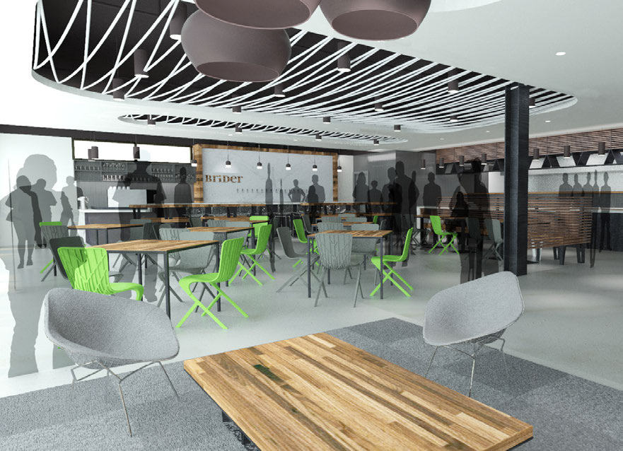
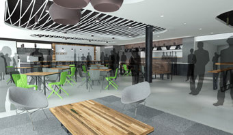
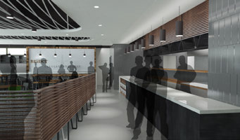
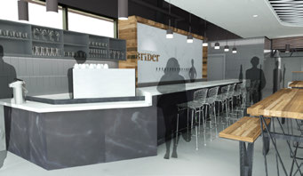
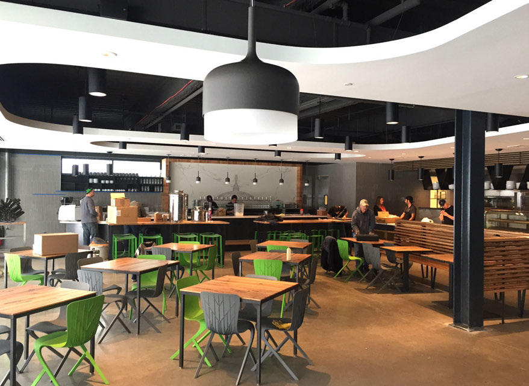
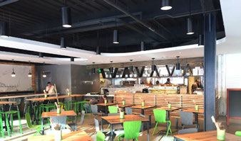
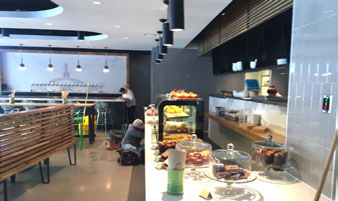
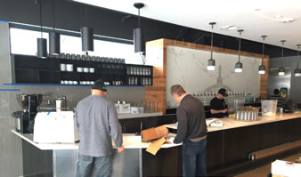
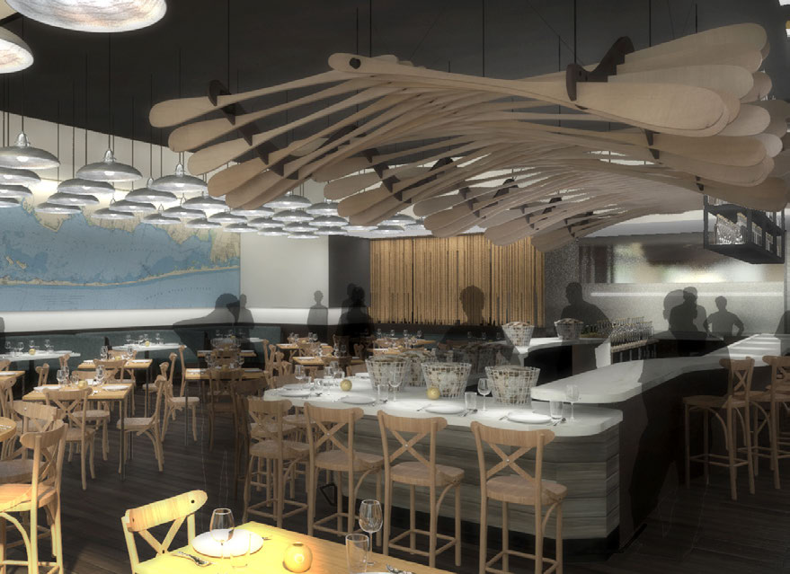
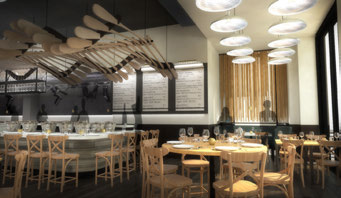
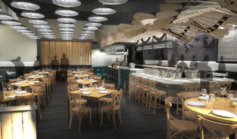
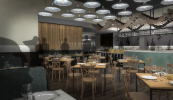
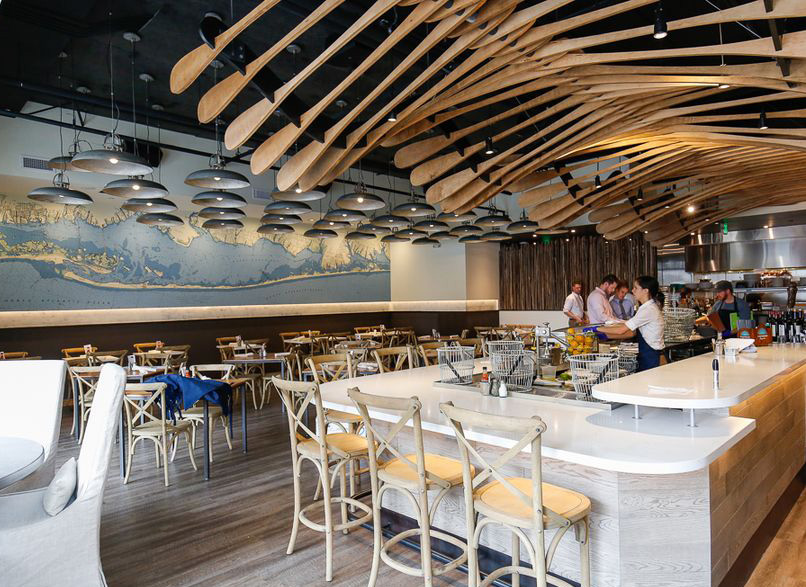
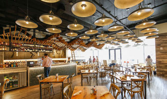
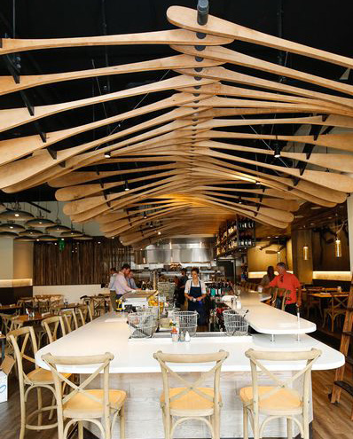